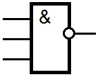
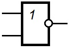
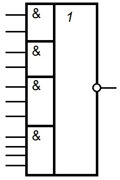
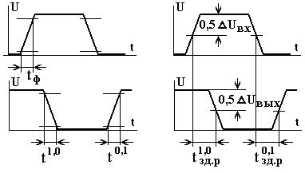

Интегральные микросхемы
Интегральной микросхемой (ИМС) называют миниатюрное электронное устройство, выполняющее определенные функции преобразования и обработки сигналов и содержащее большое число активных и пассивных элементов (от нескольких сотен до нескольких десятков тысяч) в сравнительно небольшом корпусе.
Все микросхемы подразделяют на две группы - аналоговые и цифровые.
Аналоговые микросхемы предназначены для работы с непрерывными во времени сигналами. К их числу можно отнести усилители радио-, звуковой и промежуточной частот, операционные усилители, стабилизаторы напряжения и др. Для аналоговых микросхем характерно то, что входная и выходная электрические величины могут иметь любые значения в заданном диапазоне.
В цифровых микросхемах входные и выходные сигналы могут иметь один из двух уровней напряжения: высокий или низкий. В первом случае говорят, что мы имеем дело с высоким логическим уровнем, или логической 1, а во втором - с низким логическим уровнем, или логическим 0.
В цифровых микросхемак различают комбинационные схемы и цифровые автоматы. В комбинационных схемах состояние на выходе в данный момент времени однозначно определяется состояниями на входах в тот же момент времени. Комбинационными схемами, например, являются логические элементы И, ИЛИ, НЕ и их комбинации. В цифровом автомате состояние на выходе определяется не только состояниями на входах в данный момент времени, но и предыдущим состоянием системы. К цифровым автоматам относятся триггеры.
Для микросхем транзисторно-транзисторной логики (ТТЛ) серий К133, К155, К555 в технических условиях указывают напряжение высокого логического уровня не менее 2,4 В, а низкого - не более 0,4 В. Фактически эти напряжения составляют обычно 3,2...3,5 и 0,1...0,2 В.
В своих разработках радиолюбители наряду с микросхемами ТТЛ широко используют микросхемы на полевых транзисторах, из которых наибольшее распространение получили серии микросхем КМОП (комплементарные полевые транзисторы со структурой металл-окисел-полупроводник). К ним относятся, например, микросхемы серий К164, К176, К561, К564. Для: таких микросхем напряжения, соответствующие высокому и низкому логическим уровням, составляют соответственно 8,6...8,8 и 0,02...0,05 В (при напряжении питания 9 В).
Таким образом, в микросхемах ТТЛ и КМОП высокий и низкий уровни напряжений сильно отличаются друг от друга, что упрощает совместную работу микросхем с транзисторами, тиристорами и другими приборами.
Почему же уровни напряжений называют логическими? Дело в том, что цифровые микросхемы предназначены для выполнения определенных логических действий над входными сигналами. Например, на выходе цифровой микросхемы должно появиться напряжение высокого уровня в том случае, если напряжение высокого уровня присутствует хотя бы на одном из входов, т.е. данная микросхема выполняет логическую операцию ИЛИ (логическое сложение). Если же логический сигнал на выходе микросхемы должен быть равен произведению логических сигналов на входах микросхемы, то это операция логического умножения. Существует множество других правил обработки сигналов в цифровых микросхемах. Специальная область математики - булева алгебра (по имени английского математика Дж. Буля) - исследует эти законы. Вот почему цифровые микросхемы называют еще и логическими.
В основу работы цифровых микросхем положена двоичная система счисления. В этой системе используются две цифры: 0 и 1. Цифра 0 соответствует отсутствию напряжения на выходе логического устройства, 1 - наличию напряжения. С помощью нулей и единиц двоичной системы можно записать (закодировать) любое десятичное число. Так, для записи одноразрядного десятичного числа требуются четыре двоичных разряда (табл. 1).
Таблица 1
| Десятичное число |
3-й разряд (23) |
2-й разряд (22) |
1-й разряд (21) |
0-й разряд (20) |
|---|---|---|---|---|
| 0 | 0 | 0 | 0 | 0 |
| 1 | 0 | 0 | 0 | 1 |
| 2 | 0 | 0 | 1 | 0 |
| 3 | 0 | 0 | 1 | 1 |
| 4 | 0 | 1 | 0 | 0 |
| 5 | 0 | 1 | 0 | 1 |
| 6 | 0 | 1 | 1 | 0 |
| 7 | 0 | 1 | 1 | 1 |
| 8 | 1 | 0 | 0 | 0 |
| 9 | 1 | 0 | 0 | 1 |
В первом столбце таблицы записаны десятичные числа от 0 до 9, а в последующих четырех столбцах - разряды двоичного числа. Видно, что число в последующей строке получается в результате прибавления 1 к первому разряду двоичного числа. С помощью четырех разрядов можно записать числа от 0000 до 1111, что соответствует диапазону чисел от 0 до 15 в десятичной системе. Таким образом, если двоичное число содержит N разрядов, то с его помощью можно записать максимальное десятичное число, равное 2N-1. По таблице также несложно заметить, как можно перевести число из двоичной системы в десятичную. Для этого достаточно сложить степени числа 2, соответствующие тем разрядам, в которых записаны логические 1. Так, двоичное число 1001 соответствует десятичному числу 9 (23 + 20).
Двоичную систему счисления используют в большинстве современных цифровых вычислительных машин.
Логические элементы НЕ, И, ИЛИ позволяют реализовывать любую сколь угодно сложную логическую функцию. Однако для облегчения работы конструктора разработано и выпускается множество других логических элементов (3И-НЕ, 2ИЛИ-НЕ, 2-2-3-4И-4ИЛИ-НЕ (рис. 1) и др.), реализованных в отдельных корпусах микросхем.
 |
 |
 |
| а) | б) | в) |
Рис. 1 - Логические элементы:
а) - 3И-НЕ, б) - 2ИЛИ-НЕ, в) - 2-2-3-4И-4ИЛИ-НЕ
Одной из наиболее популярных серий микросхем является серия К155, которая насчитывает более 100 наименований.
Микросхемы серии К155 питаются от источника постоянного напряжения 5 В±5%, потребляя ток (на один корпус) в зависимости от назначения от 10 до 100 мА. Как было отмечено, напряжение высокого уровня фактически составляет около 3,5 В, а низкого - около 0,1 В. Для того чтобы подать на вход логического элемента напряжение низкого уровня, достаточно этот вход соединить с общим проводом питания. Для подачи напряжения высокого уровня достаточно оставить этот вход свободным, однако, чтобы уменьшить влияние помех, желательно этот вход подключить к напряжению +5В через резистор сопротивлением 1...1,5 кОм. К одному резистору можно подключать до 10 входов микросхем. Напряжение на входах логических элементов можно измерять обычным авометром на пределе измерения постоянного напряжения, но лучше использовать специальный пробник.
Основные параметры цифровых микросхем
Из многих важных параметров микросхем обратим внимание на три из них - входной и выходной токи логического элемента и его максимальное выходное напряжение.
Входной ток - это ток, который протекает через входную цепь при соединении входа логического элемента с общим проводом или с проводом питания. В первом случае ток называют вытекающим, и для большинства микросхем серии К155 он составляет 1,6 мА. Во втором случае говорят о втекающем токе, который составляет примерно 40 мкА. Из сказанного следует, что если между входом логического элемента и общим проводом включен резистор, то для обеспечения на входе напряжения низкого уровня (которое для серии К155 не должно превышать 0,4 В) его сопротивление не может быть больше 0,4 В : 0,0016 А= 250 Ом. Увеличение сопротивления этого резистора сверх указанного значения приведет к установлению на входе потенциала, соответствующего порогу переключения элемента. Такое состояние является неустойчивым. Поэтому увеличивать сопротивление этого резистора не рекомендуется. Для подачи на вход напряжения высокого уровня достаточно оставить этот вход свободным, однако с целью повышения помехоустойчивости целесообразно соединить его с проводом питания через резистор сопротивлением 1...2 кОм. Необходимо заметить, что величина входного вытекающего тока накладывает ограничение и на сопротивление времязадающих резисторов генераторов, выполненных на элементах этой микросхемы, которое не должно превышать 1 кОм. Для микросхем серии К555 входной вытекающий ток в 3-4 раза меньше, поэтому сопротивления резисторов могут быть в 3-4 раза больше. Для микросхем КМОП (К176, К561) входной вытекающий ток составляет примерно 0,2 мкА, исходя из этого следует рассчитывать и сопротивления резисторов.
Выходной ток логического элемента также может быть втекающим и вытекающим. Первый имеет место в случае подключения нагрузки между выходом и шиной питания, причем на выходе имеется напряжение низкого уровня. Значение этого тока для большинства элементов ТТЛ, у которых выходной каскад имеет внутреннюю нагрузку, составляет 16 мА. Для элементов с открытым коллектором значение этого тока значительно выше - так, для элементов микросхемы К155ЛЛ2 допускается выходной ток 300 мА. Вытекающий ток логического элемента - это ток в цепи нагрузки, включенной между выходом и общим проводом, причем на выходе имеется напряжение высокого уровня. Значение этого тока для большинства микросхем ТТЛ составляет 0,2 - 0,4 мА. Для увеличения выходного тока можно соединять параллельно несколько однотипных логических элементов, при этом объединяют входы и выходы элементов.
Максимальное выходное напряжение - это напряжение, которое может быть приложено к выходу логического элемента без повреждения последнего. Для большинства логических элементов ТТЛ оно не превышает напряжения питания, но для некоторых элементов с открытым коллекторным выходом оно значительно больше: 12 В для К155ЛА11, 15 В для К155ЛН5, 30 В для К155ЛА18, К155ЛИ5, К155ЛЛ2, К155ЛН3, К155ЛП9.
Высокое допустимое выходное напряжение в сочетании с большим выходным током позволяет непосредственно подключать к выходам микросхем электромагнитные реле, элементы индикации.
Помехоустойчивость Uп, макс – наибольшее значение напряжения помехи на входе микросхемы, при котором еще не происходит изменения уровней ее выходного напряжения.
Напряжение логической единицы U1 – значение высокого уровня напряжения для "положительной" логики и значение низкого уровня напряжения для "отрицательной" логики.
Напряжение логического нуля U0 – значение низкого уровня напряжения для "положительной" логики и значение высокого уровня напряжения для "отрицательной" логики.
Пороговое напряжение логической единицы U1пор – наименьшее значение высокого уровня напряжения для "положительной" логики или наибольшее значение низкого уровня напряжения для "отрицательной" логики на входе микросхемы, при котором она переходит из одного устойчивого состояния в другое.
Пороговое напряжение логического нуля U0пор – наибольшее значение низкого уровня напряжения для "положительной" логики или наименьшее значение высокого уровня напряжения для "отрицательной" логики на входе микросхемы, при котором она переходит из одного устойчивого состояния в другое.
Входной ток логической единицы I1вх – измеряется при заданном значении напряжения логической единицы.
Входной ток логического нуля I0вх – измеряется при заданном значении напряжения логического нуля.
Выходной ток логической единицы I1вых – измеряется при заданном значении напряжения логической единицы.
Выходной ток логического нуля I0вых – измеряется при заданном значении напряжения логического нуля.
Ток потребления в состоянии логической единицы I1пот – значение тока, потребляемого микросхемой от источников питания при логических единицах на выходах всех элементов.
Ток потребления в состоянии логического нуля I0пот – значение тока, потребляемого микросхемой от источников питания при логических нулях на выходах всех элементов.
Средний ток потребления Iпот.ср – значение тока, равное полусумме токов, потребляемых цифровой микросхемой от источников питания в двух устойчивых различных состояниях.
Потребляемая мощность в состоянии логической единицы Р1пот – значение мощности, потребляемой микросхемой от источника питания при логических единицах на выходах всех элементов.
Потребляемая мощность в состоянии логического нуля Р0пот – значение мощности, потребляемой микросхемой от источника питания при логических нулях на выходах всех элементов.
Средняя потребляемая мощность Рпот. ср. – полусумма мощностей, потребляемых микросхемой от источников питания в двух устойчивых различных состояниях.
Время перехода интегральной микросхемы из состояния логической единицы в состояние логического нуля t1,0 – интервал времени, в течение которого напряжение на выходе микросхемы переходит от напряжения логической единицы к напряжению логического нуля, измеренный на уровнях напряжения 0,1 и 0,9 от амплитуды импульса.
Время перехода интегральной микросхемы из состояния логического нуля в состояние логической единицы t0,1 – интервал времени, в течение которого напряжение на выходе микросхемы переходит от напряжения логического нуля к напряжению логической единицы, измеренный на уровнях напряжения 0,1 и 0,9 от амплитуды импульса.
Время задержки распространения сигнала при включении t1,0зд, р – интервал времени между входным и выходным импульсами при переходе напряжения на выходе микросхемы от напряжения логической единицы к напряжению логического нуля, измеренный на уровне 0,5 амплитуды.
Время задержки распространения сигнала при выключении t0,1зд, р – интервал времени между входным и выходным импульсами при переходе напряжения на выходе микросхемы от логического нуля к логической единицы, измеренный на уровне 0,5 амплитуды.
Среднее время задержки распространения сигнала tзд, р.с. – интервал времени, равный полусумме времени задержки распространения сигнала при включении и выключении цифровой микросхемы.
Коэффициент объединения по входу Коб – число входов микросхемы, по которым реализуется логическая функция.
Коэффициент разветвления по выходу Краз – число единичных нагрузок, которые можно одновременно подключить к выходу микросхемы (единичной нагрузкой является один вход основного логического элемента данной серии интегральных микросхем).
Коэффициент объединения по выходу Коб.вых – число соединяемых между собой выходов интегральной микросхемы, при котором обеспечивается реализация соответствующей логической операции.
Сопротивление нагрузки Rн – значение активного сопротивления нагрузки, подключаемой к выходу интегральной микросхемы, при котором обеспечивается заданное значение выходного напряжения (выходного тока) или заданное усиление.
Емкость нагрузки Сн – максимальное значение емкости, подключенной к выходу интегральной микросхемы, при котором обеспечиваются заданные частотные и иные параметры.
Синхронизация работы отдельных узлов ЭВМ и других устройств цифровой техники осуществляется периодическими последовательностями прямоугольных импульсов напряжения. Импульсом напряжения называют отклонение напряжения от первоначального значения в течение короткого промежутка времени. Последовательность импульсов, мгновенные значения которых повторяются через равные промежутки времени, называют периодической последовательностью импульсов. Участок импульса, на котором происходит изменение напряжения от начального уровня до конечного, называют фронтом импульса, а участок, на котором напряжение возвращается к исходному уровню, называется срезом импульса. Длительностью фронта импульса считают время нарастания напряжения от 0,1Uм до 0,9Uм, а длительностью среза – время изменения напряжения от 0,9Uм до 0,1Uм, где Uм – амплитуда импульса.
Когда говорят о длительности импульса, то необходимо указывать, на каком уровне от амплитуды импульса проводились измерения: на уровне 0,1Uм или 0,5Uм.
Частота следования импульсов – это число импульсов в одну секунду.
Период следования импульсов – это минимальное время, через которое повторяются мгновенные значения напряжения.
Интервал времени между окончанием одного импульса и началом следующего называется паузой.
Величину, равную отношению периода следования импульсов к длительности импульса, называют скважностью импульсов.
Периодическая последовательность прямоугольных импульсов при скважности 2 называется меандром.
Прямоугольный импульс напряжения иногда рассматривают как совокупность двух перепадов напряжения. Перепады напряжения – это быстрые изменения напряжения между двумя уровнями. Перепад называют положительным, если напряжение изменяется от низкого уровня к высокому, и отрицательным, если напряжение изменяется от высокого уровня к низкому. Перепад напряжения, у которого длительность равна нулю, называется скачком напряжения.

Рис. 2 - Определение временных параметров импульса
На рисунке 2 показано, как определяется длительность фронта входного импульса tф, время перехода интегральной микросхемы из состояния логической единицы в состояние логического нуля t1,0, время перехода интегральной микросхемы из состояния логического нуля в состояние логической единицы t0,1, время задержки распространения при включении t1,0зд,р, время задержки распространения при выключении t0,1зд,р.
Советы по монтажу интегральных микросхем
- Во время пайки нельзя перегревать корпус микросхемы. Для этого следует использовать припой с температурой плавления не более 260°С, мощность паяльника не должна превышать 40 Вт. Длительность пайки одного вывода - не более 5 с, а промежуток времени между пайками выводов одной микросхемы должен быть не менее полминуты. Если ведется монтаж нескольких микросхем, то сначала паяют первый вывод первой микросхемы, затем первый вывод второй и т. д., затем второй вывод первой микросхемы, второй вывод второй и т. д. Благодаря такому приему микросхемы успевают остывать в промежуток между пайками.
- Микросхемы КМОП могут быть выведены из строя разрядом статического электричества, основным источником которого является человек. Чтобы этого не случилось, жало паяльника и руки радиомонтажника необходимо заземлять.
- Монтаж микросхемы может быть выполнен печатным способом, проводами
или комбинированным способом.
При пайке проводами удобно использовать многожильный провод в тугоплавкой изоляции типа МГТФ 0,07...0,12 мм2 или одножильный луженый провод 0,25...0,35 мм2 также в тугоплавкой изоляции. Сначала на вывод микросхемы наматывают 1-1,5 витка провода, а затем производят пайку. Этот способ хорош тем, что позволяет неоднократно производить перепайки проводов, а такая необходимость может возникнуть в процессе наладки устройства.
Печатный монтаж микросхем следует применять тогда, когда есть уверенность, что схема работоспособна, а также при изготовлении нескольких одинаковых устройств на одинаковых платах. Печатные платы могут иметь одно- и двустороннее расположение печатных проводников.
При комбинированном способе монтажа микросхемы припаивают к контактным площадкам, а в другие отверстия контактных площадок впаивают проволочные проводники. - Неиспользуемые выводы микросхем ТТЛ следует объединять в группы по 10 шт. и подключать к плюсовой шине питания через резистор 1...1,5 кОм; неиспользуемые выводы микросхем КМОП можно непосредственно подключать к плюсовой шине.
- Для улучшения помехозащищенности между шинами питания следует устанавливать конденсаторы типов КМ-6, К10-7, К10-17 емкостью 0,1...0,047 мкф из расчета один конденсатор на два-три корпуса микросхем. Особое внимание следует уделять обеспечению помехоустойчивости устройств, имеющих в своем составе микросхемы памяти - триггеры, счетчики и т. п.
- Соединительные провода должны иметь длину не более 20... 30 см. Если же требуется передать сигнал на большее расстояние, используют так называемые витые пары. Два провода скручивают вместе, по одному из них подается сигнал, а второй заземляют (соединяют с общим проводом) с обоих концов. Целесообразно также оба конца сигнального провода подключить к плюсовой шине через резисторы 1 кОм (для ТТЛ-микросхем) или 100 кОм (для КМОП-микросхем). Длина проводов витой пары может достигать 1,5...2 м.